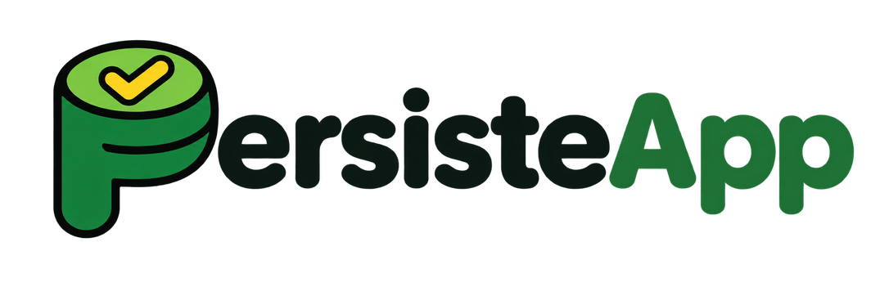

Qué decir, qué mostrar y qué preguntar en cada uno de los 6 módulos de PersisteApp. Escrita en lenguaje natural, para explicar sin tecnicismos a quien nunca ha visto una base de datos.
Cada módulo trae cinco piezas, siempre en el mismo orden:
| Pieza | Para qué sirve |
|---|---|
| La idea en una frase | Lo único que el estudiante debe recordar si se distrae el resto del módulo. |
| Dilo así (cursiva amarilla) | Un guion para leer o parafrasear en voz alta. Está escrito para decirse, no para proyectarse. |
| Qué mostrar | Los pasos de la app, en orden, y qué tocar en cada uno. |
| Pregunta al grupo | Una pregunta para hacer en voz alta antes de revelar la respuesta. |
| Ojo (rojo) | La confusión más común y cómo desarmarla. |
| # | Módulo | Min | Bloque |
|---|---|---|---|
| 1 | Dónde viven los datos cuando apagas el programa | 10 | Teoría de bases de datos |
| 2 | Cuatro verbos para hablarle a una tabla | 15 | |
| 3 | Tablas que se señalan: llaves y relaciones | 15 | |
| 4 | El viaje de una consulta | 10 | Java sin ORM |
| 5 | De la tabla a la clase | 15 | |
| 6 | Sin ORM: tú escribes el puente | 13 |
Toda la sesión usa el mismo ejemplo: una universidad con estudiantes, cursos y matrículas. Ana Torres aparece en casi todas las pantallas. Repetir el mismo ejemplo es intencional: el estudiante no gasta energía entendiendo datos nuevos y se concentra en la idea.
| Palabra | Cómo explicarla |
|---|---|
| Base de datos | Un archivador ordenado que vive en el disco: lo que guardas sigue ahí aunque apagues el computador. |
| Motor | El programa que cuida ese archivador y atiende pedidos. PostgreSQL y Oracle son motores. |
| SQL | El idioma en que se le hacen pedidos al motor. Casi igual en PostgreSQL y en Oracle. |
| Tabla | Una hoja de Excel con nombre: estudiante, curso, matricula. |
| Fila | Un registro completo: un estudiante. |
| Columna | Un dato que tienen todas las filas: el nombre, el correo. |
| Consulta | Un pedido escrito en SQL: «dame los nombres». |
| Llave primaria (PK) | El número de cédula de cada fila: nunca se repite y permite elegir una sola. |
| Llave foránea (FK) | Una columna que guarda la cédula de otra tabla: señala, no copia. |
| Transacción | Un paquete de cambios que se guarda completo o no se guarda nada. |
| Driver | El intérprete que traduce lo que pide Java al idioma de red del motor. |
| ORM | Una librería que escribe el SQL por ti. Hoy no la usamos: escribimos el puente a mano para entender qué pasa por debajo. |
«Imaginen que hacen un programa en Java que registra estudiantes en un ArrayList. Funciona perfecto… hasta que lo cierran. Al volver a abrirlo, la lista está vacía. ¿Por qué? Porque esa lista vivía en la memoria RAM, y la RAM se borra al apagar. Una base de datos existe para resolver exactamente eso: guarda en el disco, y lo que está en el disco sobrevive.»
«Dentro de la base de datos, los datos se acomodan en tablas. Piensen en Excel: cada fila es un estudiante y cada columna es un dato del estudiante. Y hay una columna especial, el id, que funciona como una cédula: nunca se repite.»
«¿Quién cuida todo esto? Un programa llamado motor: PostgreSQL u Oracle. Y para pedirle cosas usamos un idioma, SQL. SQL es el idioma; el motor es quien lo entiende.»
id primero, luego una fila y luego una columna.CREATE TABLE estudiante ( id SERIAL PRIMARY KEY, nombre VARCHAR(80), correo VARCHAR(120), nacimiento DATE );
«Crea una tabla llamada estudiante con cuatro columnas. El id lo pone el motor solo (SERIAL) y es la llave primaria. El nombre y el correo son textos con un máximo de letras, y nacimiento es una fecha.»
«Hay dos estudiantes llamadas Ana Torres. Si quiero cambiar el correo de solo una, ¿con qué columna la elijo?» Respuesta: con el id, porque es lo único que no se repite.
| Acción | Verbo SQL | Frase en español |
|---|---|---|
| Leer | SELECT | «Muéstrame…» |
| Crear | INSERT | «Agrega una fila nueva con…» |
| Cambiar | UPDATE | «En estas filas, cambia… por…» |
| Borrar | DELETE | «Quita estas filas» |
«A esto se le llama CRUD: Create, Read, Update, Delete. Toda aplicación que conocen, Instagram, el SIRA de la universidad, el banco, al final hace solo estas cuatro cosas con sus datos.»
«Un SELECT se lee casi como una frase: selecciona el nombre, de la tabla estudiante, donde el año sea mayor o igual a 2005, ordenado por nombre.»
«Y WHERE es el freno de mano. En un UPDATE o un DELETE, WHERE elige qué filas se tocan. Si se les olvida, se tocan todas. Todas.»
SELECT nombre FROM estudiante WHERE id = 1; UPDATE estudiante SET correo = 'ana.t@unicesar.edu.co' WHERE id = 1;
«Primero: dame el nombre del estudiante número 1. Segundo: al estudiante número 1, ponle este correo nuevo.»
«Quiero ver solo los nombres de los nacidos desde 2005. ¿Qué parte de la consulta cambia?» Respuesta: se agrega un WHERE con el año.
«¿Por qué no meter todo en una sola tabla gigante? Hagamos la prueba. El curso Bases de Datos cambia de nombre. En la tabla gigante el nombre está copiado en cada matrícula: hay que cambiarlo en todas, y si se nos escapa una, la tabla se contradice. En tablas separadas el nombre vive en un solo lugar: un cambio y listo.»
«La tabla matrícula no copia nombres; guarda números. estudiante_id = 1 significa ‘el estudiante cuya cédula es 1’. Esa columna que señala a otra tabla se llama llave foránea.»
«JOIN es lo contrario: la matrícula solo tiene números, y JOIN va a buscar el nombre que le corresponde a cada número.»
«Y la transacción: matricular a Ana son dos cambios que van juntos. O se guardan los dos, o ninguno. Como una transferencia bancaria: no puede salir la plata de una cuenta sin llegar a la otra.»
CREATE TABLE matricula ( id SERIAL PRIMARY KEY, estudiante_id INTEGER REFERENCES estudiante(id), curso_id INTEGER REFERENCES curso(id), nota NUMERIC(2,1) );
«REFERENCES es la palabra clave: estudiante_id solo puede tener ids que existan en la tabla estudiante.»
SELECT e.nombre, c.nombre AS curso FROM matricula m JOIN estudiante e ON e.id = m.estudiante_id JOIN curso c ON c.id = m.curso_id;
«m, e y c son apodos cortos de cada tabla. AS le pone otro nombre a una columna del resultado. ON dice qué número se une con cuál.»
BEGIN; -- empieza el paquete ...cambios... COMMIT; -- guarda todo (o ROLLBACK; para deshacer todo)
«¿Qué pasa si matriculo al estudiante 99, que no existe?» Respuesta: el motor rechaza el INSERT; la llave foránea no permite señalar a nadie que no exista.
| Pieza | Qué hace | Analogía |
|---|---|---|
| Tu código Java | Escribe el pedido en SQL. | El cliente en el restaurante. |
| Driver JDBC | Traduce el pedido al protocolo del motor. | El mesero que traduce a la cocina. |
| Red | Lleva el mensaje hasta el servidor (puerto 5432 en PostgreSQL, 1521 en Oracle). | El pasillo hasta la cocina. |
| Motor | Busca las filas en el disco y las devuelve. | La cocina. |
«Cuando Java quiere los nombres de los estudiantes, no abre un archivo. Escribe el mismo SELECT que ya conocen y se lo entrega a un intermediario: el driver. Hay un driver para PostgreSQL y otro para Oracle; por eso el mismo código Java sirve para los dos cambiando solo el driver y la dirección.»
«El driver lo manda por la red al motor. El motor busca, encuentra las filas y las devuelve por el mismo camino. Y el driver se las entrega a Java en algo que Java puede leer: un ResultSet.»
«PostgreSQL ya encontró las filas. ¿Qué pieza se las entrega a Java en una forma que puede leer?» Respuesta: el driver, en un ResultSet.
| Base de datos | Java | Ejemplo | |
|---|---|---|---|
| Tabla | → | Clase | estudiante → Estudiante |
| Fila | → | Objeto | La fila de Ana → new Estudiante(1, "Ana Torres") |
| Columna | → | Atributo | nombre → String nombre |
| Llave foránea | → | Atributo con el id | curso_id → int cursoId |
«La tabla es el molde y cada fila es una ficha llena. En Java pasa igual: la clase es el molde y cada objeto es una ficha. Por eso el paso de uno a otro es tan natural: tres parejas y ya.»
«El tipo de cada atributo sale del tipo de la columna: si la columna guarda texto, en Java es String; si guarda un número entero, es int; si guarda una fecha, es LocalDate.»
«Sin ORM nadie hace la conversión por ustedes. Por eso conviene que los nombres se parezcan: en SQL se escribe estudiante_id, con guion bajo; en Java, estudianteId, en camelCase. Mismo nombre, distinta costumbre de escritura.»
public class Estudiante {
private int id; // columna id (INTEGER)
private String nombre; // columna nombre (VARCHAR)
private String correo; // columna correo (VARCHAR)
private LocalDate nacimiento; // columna nacimiento (DATE)
}
nombre y mira el atributo que se ilumina en la clase.curso_id y mira cursoId.«La columna nombre guarda texto. ¿Qué tipo de Java usarían?» Respuesta: String.
curso_id); en Java, sin ORM, empezamos guardando ese mismo número.rs.next(), copia cada dato a un objeto, y se conecta leyendo la clave de una variable de entorno, nunca del código.«Sin ORM, Java no inventa ningún lenguaje nuevo: manda exactamente el mismo SQL que escribieron en el editor. Son tres pasos: escribo el SQL como texto, lo preparo y lo envío.»
String sql = "SELECT id, nombre FROM estudiante"; PreparedStatement ps = con.prepareStatement(sql); ResultSet rs = ps.executeQuery();
«Las filas que vuelven quedan en rs. Piensen en rs como un dedo que recorre la tabla de arriba abajo: rs.next() baja una fila y pregunta ‘¿hay otra?’. Mientras haya, copiamos los datos a un objeto.»
while (rs.next()) {
int id = rs.getInt("id");
String nombre = rs.getString("nombre");
lista.add(new Estudiante(id, nombre));
}
«Para guardar es igual, pero con signos de interrogación: cada ? es un espacio que se llena aparte. Eso además protege contra ataques. Y como un UPDATE no devuelve filas, se envía con executeUpdate.»
String sql = "UPDATE estudiante SET correo = ? WHERE id = ?"; ps.setString(1, "ana.t@unicesar.edu.co"); ps.setInt(2, 1); ps.executeUpdate();
«Para conectarse hace falta una dirección, un usuario y una clave. Si la clave queda escrita en el código y lo suben a GitHub, el mundo entero la ve. Por eso se guarda en variables de entorno, valores que el sistema le entrega al programa al arrancar. Main las lee, se las pasa al pool, y el pool presta conexiones ya abiertas, como bicicletas compartidas: se toma una, se usa y se devuelve.»
public static void main(String[] args) {
String url = System.getenv("DB_URL");
String clave = System.getenv("DB_PASSWORD");
DataSource pool = Pool.crear(url, "app", clave);
Connection con = pool.getConnection();
}
| Pregunta | Respuesta |
|---|---|
| rs está en la fila de Ana. El nombre es texto: ¿cómo se lo pides? | rs.getString("nombre") |
| ¿Qué método envía un INSERT? | executeUpdate(), porque cambia datos y no devuelve filas. |
| Vas a subir el proyecto a GitHub: ¿dónde va la clave? | En una variable de entorno que el programa lee. |
«Hoy no aprendieron un framework; aprendieron lo que hay debajo de todos los frameworks. Cuando mañana usen un ORM como Hibernate o JPA, sabrán que por dentro está haciendo exactamente esto: armar el SQL, enviarlo por el driver y copiar filas a objetos.»
«Una variable de entorno es una nota que el sistema le pasa al programa al arrancar. La clave de la base de datos va ahí, no en el código. Así el mismo programa sirve en mi computador, en el de pruebas y en producción: solo cambia la nota.»
| Haz esto | Por qué |
|---|---|
Guarda los valores en un archivo .env y agrégalo a .gitignore. | El archivo con la clave nunca llega a GitHub. |
Sube un .env.example con los nombres, sin valores. | Quien clone el proyecto sabe qué variables necesita, sin ver tus claves. |
| Usa un valor distinto en cada entorno (desarrollo, pruebas, producción). | Si se filtra la clave de pruebas, producción sigue segura. |
| Conéctate con un usuario de base de datos con los permisos mínimos. | Si alguien roba la clave, no puede borrar tablas ni crear usuarios. |
| Valida al arrancar: si falta una variable, el programa se detiene con un mensaje claro. | Mejor fallar al inicio que a mitad de una operación. |
| Nunca imprimas la clave en consola ni en logs. | Los logs se comparten y se guardan mucho tiempo. |
| En producción, usa el gestor de secretos de la plataforma (GitHub Secrets, Vercel, Supabase, AWS Secrets Manager). | Cifra los valores y controla quién los ve. |
| Si una clave se sube por error, cámbiala de inmediato. | Borrar el commit no basta: el historial de Git y los clones la conservan. |
.env (en tu equipo, nunca en Git)
DB_URL=jdbc:postgresql://localhost:5432/persiste DB_USER=app_lectura DB_PASSWORD=una-clave-larga-y-unica
.env.example (sí va en Git)
DB_URL= DB_USER= DB_PASSWORD=
.gitignore
.env .env.* !.env.example
Leer y validar en Java (falla rápido si falta algo):
static String requerida(String nombre) {
String valor = System.getenv(nombre);
if (valor == null || valor.isBlank()) {
throw new IllegalStateException("Falta la variable de entorno " + nombre);
}
return valor;
}
String url = requerida("DB_URL");
String user = requerida("DB_USER");
String clave = requerida("DB_PASSWORD"); // nunca System.out.println(clave)
«El peligro se llama inyección SQL. Si pego lo que escribe el usuario dentro del texto del SQL, el usuario puede escribir SQL. Y el motor no distingue: ejecuta lo que le llegue.»
❌ Mal: SQL concatenado con lo que escribe el usuario
String correo = request.getParameter("correo");
String sql = "SELECT * FROM estudiante WHERE correo = '" + correo + "'";
Statement st = con.createStatement();
ResultSet rs = st.executeQuery(sql);
Si el usuario escribe ' OR '1'='1, la consulta queda así y devuelve todos los estudiantes:
SELECT * FROM estudiante WHERE correo = '' OR '1'='1'
Con '; DELETE FROM estudiante; -- podría borrar la tabla entera.
✅ Bien: consulta parametrizada dentro de un DAO
public class EstudianteDao {
private final DataSource pool;
public EstudianteDao(DataSource pool) { this.pool = pool; }
public Optional<Estudiante> buscarPorCorreo(String correo) throws SQLException {
String sql = "SELECT id, nombre, correo FROM estudiante WHERE correo = ?";
try (Connection con = pool.getConnection();
PreparedStatement ps = con.prepareStatement(sql)) {
ps.setString(1, correo); // el dato viaja aparte, nunca como SQL
try (ResultSet rs = ps.executeQuery()) {
if (!rs.next()) return Optional.empty();
return Optional.of(new Estudiante(rs.getInt("id"),
rs.getString("nombre"), rs.getString("correo")));
}
}
}
}
El ? hace que el motor reciba el SQL y el dato por separado: aunque el usuario escriba ' OR '1'='1, se busca un correo con ese texto literal y no aparece ninguno. El try (...) devuelve la conexión al pool aunque haya un error.
✅ Mejor aún: el cliente llama a una API y nunca ve el SQL
La app del navegador o del celular no habla con la base de datos. Pide datos a un endpoint; el servidor valida la entrada y usa el DAO.
// Cliente (navegador): solo envía el dato, no SQL
fetch("/api/estudiantes?correo=" + encodeURIComponent(correo));
// Servidor (Java): valida y delega en el DAO
@GetMapping("/api/estudiantes")
public ResponseEntity<Estudiante> buscar(@RequestParam String correo) throws SQLException {
if (!correo.matches("^[\\w.+-]+@[\\w.-]+\\.[a-z]{2,}$")) {
return ResponseEntity.badRequest().build();
}
return dao.buscarPorCorreo(correo)
.map(ResponseEntity::ok)
.orElse(ResponseEntity.notFound().build());
}
| Capa | Qué hace | Qué nunca hace |
|---|---|---|
| Cliente (web o móvil) | Llama a /api/... con datos. | Escribir SQL ni guardar la clave de la base de datos. |
| API (servidor) | Valida la entrada, revisa permisos, llama al DAO. | Pegar el texto del usuario dentro del SQL. |
| DAO | Usa PreparedStatement con ?. | Usar Statement con concatenación. |
| Base de datos | Atiende a un usuario con permisos mínimos. | Aceptar conexiones desde internet sin control. |
| Pregunta | Respuesta |
|---|---|
Subiste el .env a GitHub y luego borraste el commit. ¿Ya estás seguro? | No. Hay que cambiar la clave: el historial y los clones la conservan. |
¿Qué protege contra la inyección SQL: validar el correo o usar ?? | El ?. Validar ayuda, pero la protección real es que el dato viaje aparte del SQL. |
| ¿Por qué la app del celular no se conecta directo a PostgreSQL? | Tendría que llevar la clave dentro, y cualquiera podría extraerla. La API la guarda en el servidor. |
? con PreparedStatement, y siempre detrás de una API.